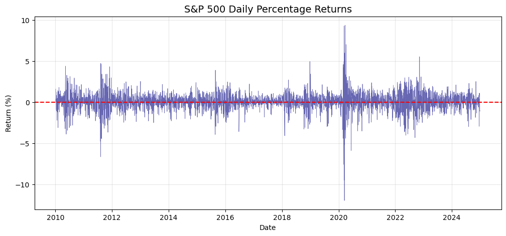
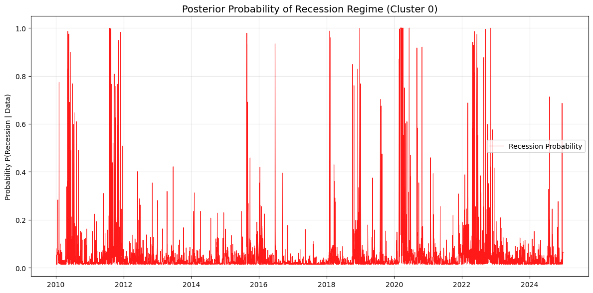
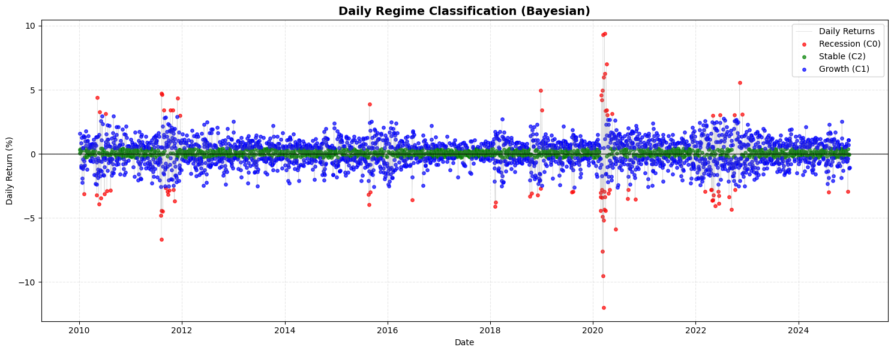

베이지안 모델링, 석사 과정
베이지안 시장 국면 탐지
S&P500 일별 수익률을 유한 혼합 모형으로 침체·안정·성장 국면에 나누고, Gibbs Sampler를 직접 구현해 추정
| 기간 | 2026 |
|---|---|
| 형태 | University of Glasgow 석사 과정 (Bayesian Data Analysis 과목) |
| 기술 | Python, NumPy, pandas, matplotlib |
| 코드 | github.com/suipizza/Bayesian-market-regime-detection |
분석 질문
- 수익률 분포 하나로 설명하기 어려운 시장을, 숨어 있는 국면 여러 개의 혼합으로 보고 국면별 수익률과 변동성을 추정할 수 있는지 확인
방법
- 2009–2024 S&P500 일별 수익률을 정규분포 3개의 혼합(침체·안정·성장)으로 모형화
- 평균, 분산, 국면 비율에 켤레 사전분포를 두고 Gibbs Sampler를 라이브러리 없이 직접 구현
- 20,000회 반복, burn-in 5,000회, thinning 5로 사후표본 3,000개 확보
- 국면 이름이 뒤바뀌는 label switching 문제를 막기 위해 무작위 순열 단계 추가, trace plot으로 수렴 확인

결과
- 침체 국면은 변동성이 크고 큰 음의 수익률이 몰려 있어 나머지 두 국면과 뚜렷하게 구분됨
- 2020년 코로나 급락 등 시장 충격 시기에 침체 국면 사후확률이 크게 올라감
- 안정·성장 국면은 평균 수익률은 비슷하지만 변동성에서 차이가 남

추가 결과
